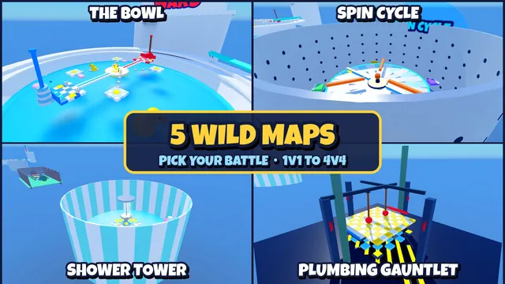
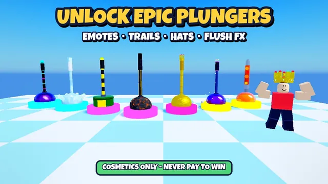

Games
Toilet Wars
Flush or be flushed.
Live
Toilet Wars is a team based multiplayer arena game on Roblox. Two teams, the Red Plungers and the Blue Scrubbers, soak each other with plungers, toilet paper launchers and flush bombs, then knock their rivals off the map. It is public on Roblox and I keep developing it.

- Type
- Multiplayer arena game on Roblox
- Built with
- Roblox Studio, Luau
- Teams
- 1v1 up to 4v4, bots fill empty slots
- My role
- Concept, game direction, design and development
What it is
Roblox is a platform where millions of people play games made by independent creators, on phones, computers, tablets and consoles. Toilet Wars is one of those games, and anyone can join it from the Roblox app or website.
It is a knockback brawler: instead of losing health, players get soaked, and the aim is to send rivals flying off the arena or into the bowl. Matches are short, loud and team based, built for playing with friends.
The core loop
Pick a battle
Press Play, choose a map and a team size from 1v1 to 4v4. Bots fill any empty slots so a match can always start.
Soak your rivals
Every hit with a plunger, a toilet paper roll or a flush bomb raises a rival's soak percentage, shown above their head.
Knock them out
Soaked players are easier to send flying. Push them off the map or into the bowl, while your team holds the objective.
Charge the Super Flush
Build up your Super Flush and release it for a blast that can turn a round.
Earn and unlock
Rounds feed daily rewards, quests, challenges and the Flush Pass, which unlock cosmetics.
Game modes
- Throne Control
- Flush Frenzy
- Sinking Bowl
- A Practice Range for new players
Weapons and abilities
- Plunger weapons for close range hits
- Toilet paper launcher for range
- Flush Bomb
- Super Flush, a charged special ability
Chaos events
- Mega Flush
- Low Gravity
- Golden Plunger
Five maps
- The Bowl
- Spin Cycle
- Sewer Run
- Shower Tower
- The Gauntlet
Progression without pay to win
- Free daily rewards and login streaks
- Daily quests, weekly challenges and achievements
- Season 1 Flush Pass with 15 tiers of rewards
- A daily featured shop with skins, hats, trails, titles, emotes and victory animations
- Cosmetics never affect gameplay
- Parties so friends can play together
How I built it
Concept and direction
The idea, the tone and the rules are mine: a silly theme with a competitive core, readable for younger players and deep enough to keep playing.
Systems design
I planned the soak and knockback rules, the three modes, the chaos events, team sizes from 1v1 to 4v4 and how rewards should feel fair.
Building in Roblox Studio
The game is scripted in Luau. I write and change code myself and use an AI coding assistant heavily to draft systems, debug and review, then I read, adjust and decide what ships.
Arenas and interface
Five obstacle course maps, a lobby with map and team size selection, and a HUD that shows soak percentages clearly on phones and computers.
Test and refine
Play sessions in Studio and on Roblox after each change, then balance passes on knockback, events and rewards.
Tools
- Roblox Studio
- Luau
- AI coding assistant
- Roblox experience settings
Gallery
These are the game's Roblox store images, made from in game scenes with title text added on top.
 Knockback in action
Knockback in action
The maps and team sizes
Cosmetic plungers, never pay to win


Status
Public on Roblox since November 2026 and actively developed: new balance passes, content and fixes follow play testing.